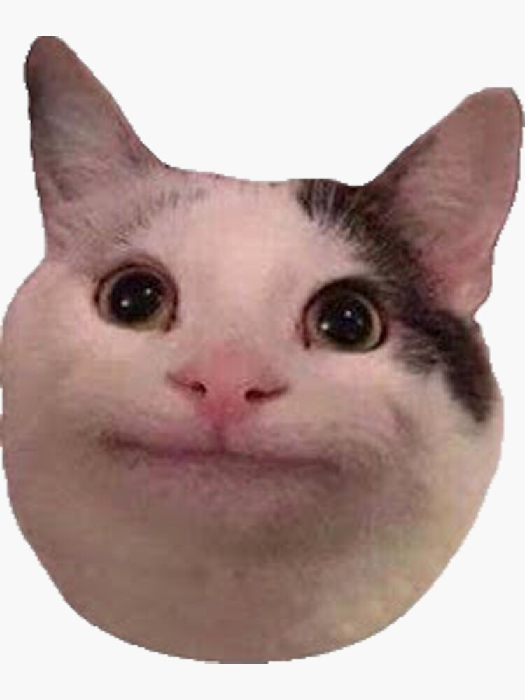
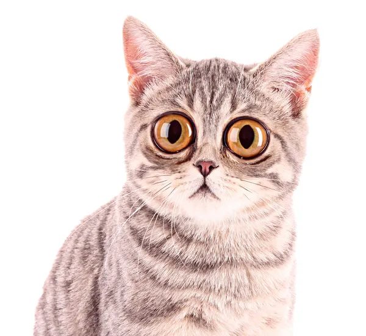

Pourquoi aimons-nous les chats ?
Les chats sont des animaux incroyables : indépendants, affectueux et joueurs. Leur ronronnement est apaisant et ils nous apportent beaucoup de bonheur.

Quelques faits amusants :
- Les chats dorment en moyenne 13 à 16 heures par jour.
- Ils utilisent leur queue pour équilibrer leurs sauts.
- Chaque chat a un ronronnement unique.
- Les chats peuvent sauter jusqu'à 6 fois leur longueur en hauteur !
- Leurs moustaches sont sensibles et leur permettent de mesurer l'espace autour d'eux.
- Les chats peuvent entendre des sons jusqu'à 64 kHz, bien plus que les humains ou même les chiens !
Les chats peuvent être complètement fous !

Parfois, les chats ont des comportements totalement imprévisibles qui nous font rire aux éclats ! Voici quelques exemples :
- Course folle : Les chats peuvent soudainement se lancer dans des courses effrénées dans toute la maison, pour aucune raison apparente.
- Sauts imprévus : Un chat peut sauter d'un endroit à un autre sans aucune logique, juste pour le fun.
- Explorations bizarres : Les chats aiment se faufiler dans des boîtes, des sacs ou des tiroirs, et parfois se retrouver dans des positions totalement improbables.
- Chasses imaginaires : Les chats peuvent passer des heures à chasser des "proies invisibles" dans la pièce, comme des ombres ou des objets qui n'existent pas !